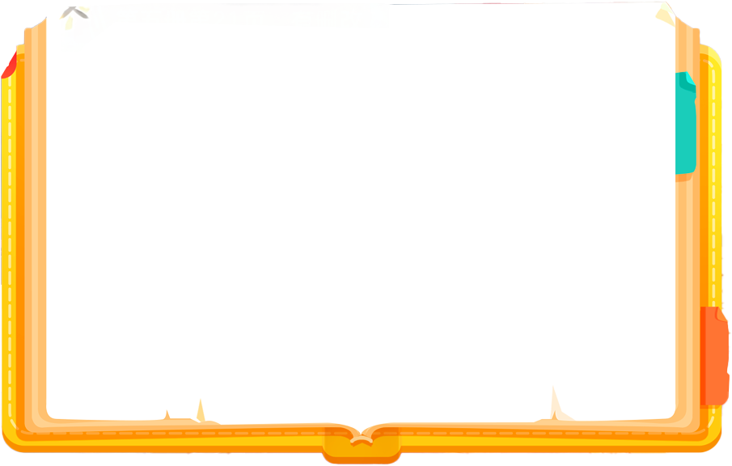

第五册第21页，有删改
国王一点也没有注意到我们，他那时正在思考一个问题。我们至少等了一个钟头，他才解决了这个问题。他的两旁各站着一位手里拿着拍子的年轻拍手。
他们俩看到他不再沉思，有了空暇时间，其中一位就轻轻地拍一下他的嘴，另一位拍了拍他的右耳，这样一来，他好像突然惊醒了过来， 向我这边一看，又看到了围着我的那些人，这才想起了刚才他接到了报告并且要召见我。
国王在干什么？
为什么拍手要拍拍国王？
空暇（kong xia）：空闲